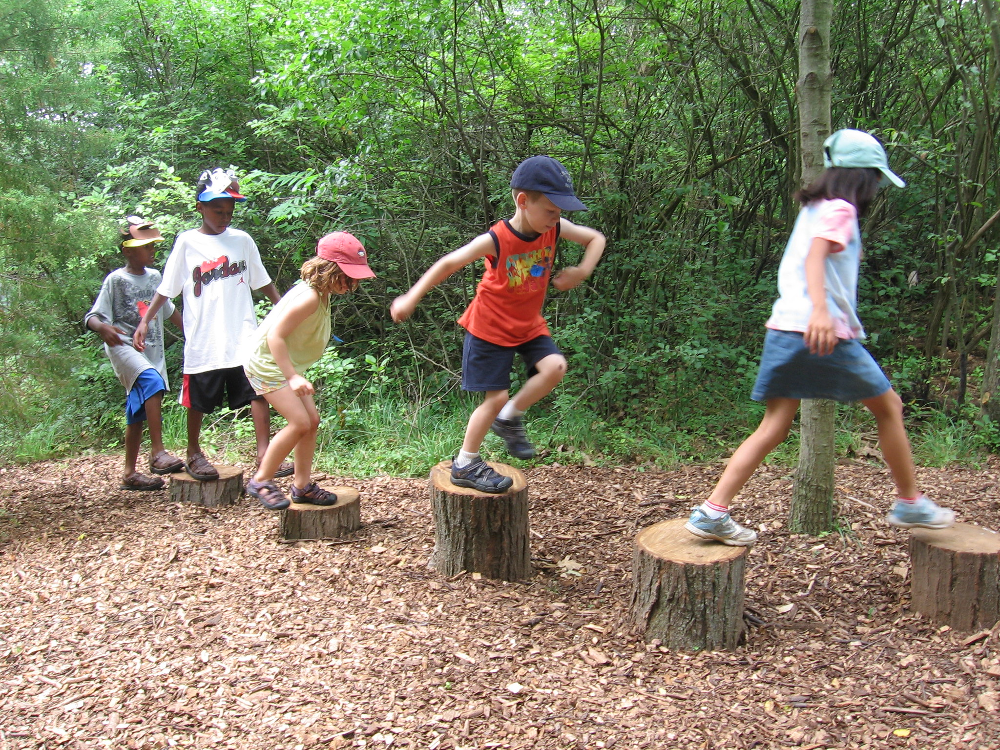
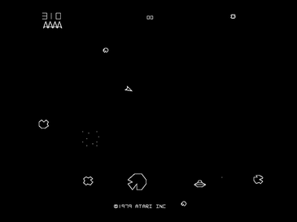
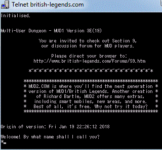

Jocurile sunt esențiale în viață, ele sunt cele care ne educă în copilărie și ne distrag în momente de plictiseală, dar mai ales în cele de stres
Acestea au un impact puternic în dezvoltarea abilităților cognitive, puterea fizică dar și coordonarea în copilărie
Snake
Snake este numele comun pentru un concept de joc video în care jucătorul manevrează o linie care crește în lungime, coada în sine fiind principalul obstacol. Conceptul a luat naștere în jocul arcade Blockade, iar ușurința de implementare a jocului Snake a dus la sute de versiuni pentru multe platforme. După ce o variantă a jocului venea preistalată pe telefoanele mobile Nokia în 1998, a existat o reapariție a interesului pentru acest concept, mulțumită piețeii de desfacere mult mai mare.
Jucătorul controlează un punct sau un pătrat. Pe măsură ce înaintează, lasă o coadă în urmă, asemănătoare cu cea a unui șarpe care se mișcă. Coada șarpelui poate fii de două feluri, in anumite jocuri sfărșitul cozii este într-un punct fix, precum cea din jocul Blockade, dar în altele coada are o lungine fixă mișcăndu-se in urma punctului controlat de jucător, prcum în Snake 2. Jucătorul pierde atunci când șarpele intră în marginea ecranului (în anumite variante, altele folosind un univers de tip taurus în care partea superioară și ce inferioara sunt conectate, respectiv cea din stănga, cât și cea din dreapta), o urmă, un alt obstacol sau el însuși.
Conceptul Snake vine în două variante principale:
În prima, care este cel mai adesea un joc cu mai mulți jucători. Fiecare jucător încearcă să-l blocheze pe celălalt, astfel încât adversarul să lovească o coadă existentă și să piardă. Un joc de acest tip foarte cunoscut este slither.io.
În cea de-a doua variantă, un singur jucător încearcă să mănânce obiecte lovind în ele cu capul șarpelui. Fiecare obiect mâncat face șarpele mai lung, astfel încât evitarea cozii devine din ce în ce mai dificilă. Exemple: Nibbler, Snake Byte.
Jocurile înaintea internetului
Jocurile nu au fost o parte a dezvoltării tehnologiei dar au avut un rol în progresul acesteia ulterior. Inițial tehnologia calculatoarelor a fost dezvoltată cu un scop strict practic, jocurile având un scop pur demonstrațional, unul dintre acestea, numit "Bertie the Brain", era un joc de X și O cu o înalțime de 4 metri și folosea o tehnologie primitivă de inteligență artificială

Primele jocuri ale anilor '50 simulau jocuri de masă, ubicuul X și O (prin jocul OXO apărut in 1952), un joc de dame și altele. În 1958 a apărut primul joc creat specific pentru distracție, Tenis pentru doi, un joc care era afișat folozind două raze pe un monitor cu tub catodic. Dar, cu timpul tehnologia a evoluat, calculatoarele au devenit din ce în ce mai mici și mai performante, astel, pana la sfărșitul anilor '50 angajații universitățiilor și studenții puteu opera calculatoarele. Noii programatori dobăndiți s-au decis să programeza jocuri în scopuri non-academice, ducând până la lansarea din 1962 a jocului Spacewar! ca unul dintre cele mai vechi jocuri digitale pe calculator cunoscute care pot fi disponibile în afara institururilor locale. Până in acel punct jocurile digitale fiind accesiblie doar un cadrul unor instituri, fiecare universitate având propriile sale jocuri.
Ulterior, un număr tot mai mare de programatori au început să scrie jocuri digitale pe calculator, jocuri care puteau fi cumpărate în diverse cataloage. Pe măsură ce audiența pentru jocurile video s-a extins la mai mult de câteva zeci de instituții de cercetare, cu scăderea costului calculatoarelor au fost introduse diverse limbaje de programare care puteau fi utilizate pe diverse calculatoare, precum BASIC, un limbaj de programare creat pentru a fi prietenos pentru incepători, a început să fie dezvoltată o varietate mai largă de jocuri.
Jocurile video au intrat într-o nouă eră la începutul anilor 1970, odată cu lansarea unei noi industrii care în ultimii ani are căștiguri totale la nivelul miliardelor de dolari, industria jocurilor video comerciale în 1971, cu apariția jocului operat cu monede "Galaxy Game" și lansarea primului joc video de tip arcade Computer Space , dupa prin lansarea jocului de mare succes Pong și a primei consolă de jocuri, Magnavox Odyssey, consolă cu 28 de jocuri, care a lansat prima generație de console de jocuri video.
În anii 1970 industria jocurlor era dominată de jocuri arcade, acestea erau mecanisme relativ simple față de calculatoarele din acea perioada, fiind specific create să ruleze un joc sau o serie foarte scurta de jocuri, calculatoarele având un scop mai general aveau nevoie de componente mult mai puternice. Unele dintre aceste jocuri sunt Space Invaders, Space Race, Breakout, Space Wars, Warrior, Galaxian, Lunar Lander dar și Asteroids.
Jocuri de grup
Jocurlie "online" erau initial strict in cadrul rețelelor locale, jocul "Spacewar!" fiind primul joc cu mai mulți jucători cunoscut. În cadrul universității din Illinois, sistemul PLATO a permis studențiilor să lucreze pentru a crea o serie de jocuri online. În 1972, au fost introduse terminale PLATO IV cu noi capacități grafice, iar studenții au început să folosească acest sistem pentru a crea jocuri multiplayer. Studenții au început să programeze spre a avea puzzle-uri de tip D&D interactive multiplayer, lupte aeriene (Airfight), luptă cu tancuri, bătălii spațiale, jocuri care au funcții precum mesaje interplayer, personaje de joc persistente și joc în echipă pentru cel puțin 32 de jucători simultani.
Jocuri pe internet
Jocurile pe internet inițial erau limitate la o lungime de bandă foarte scăzută, de aceea erau limitate in aceasta manieră. Primlele jocuri online erau Jocuri de rol pe bază de text. Jocurile precum MUD1 erau inițial jucate doar pe rețele locale, dar au fost adaptate să funcționeze pe ARPANet, iar mai apoi pe internet cănd a fost posibil. Primele jocuri online cu o interfață grafică au apărut abea în 1986, prin "jocuri de actiune" ale MSX. Viteza de expansiune a internetului a condus la o explozie de jocuri online precum Quakeworld (1996), Counter-Strike (1999) dar și EverQuest (1999). Consolele de joc ale acelei perioade au început să primească adaptoare care să permită conectarea la internet ale acestora precum, spre exemplu modemuri pentru Famicom
Dar cine se joacă azi?
Stereotipul conform căruia jocurile online, în general, sunt jucate mai ales de bărbați a rămas oarecum corect de ani de zile, dar statisticile recente încep să diminueze această majoritate de jucatori. Deși un număr mondial de jucători masculini domină încă femeile (52% cu 48%), femeile reprezintă mai mult de jumătate din jucătorii anumitor jocuri. Începând din 2019, jucătorul mediu are 33 de ani.